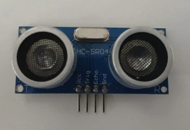
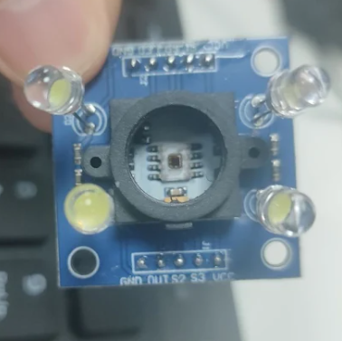
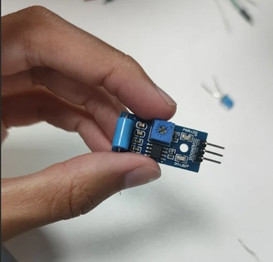
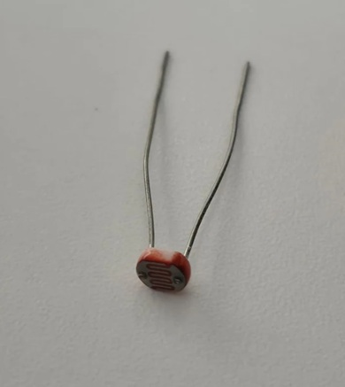
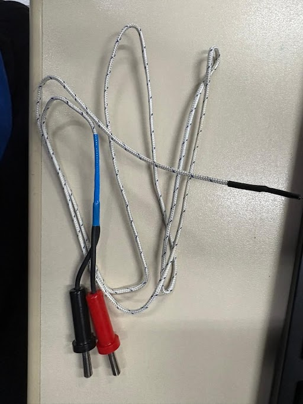
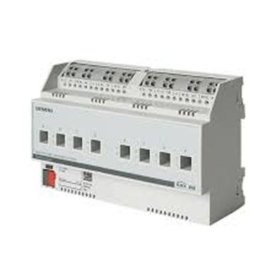

O sensor ultrassônico é um aparelho que mede distância utilizando de ondas sonoras, utilizando um dos seus lados para emitir essas ondas enquanto o outro as recebe quando voltam.

O sensor de cor é um aparelho que detecta e identifica a cor com base na luz refletida, emitindo uma luz branca e quando a luz é refletida os sensores medem a quantidade de vermelho, azul e verde e determina a cor detectada com base nesses dados.

O sensor de vibração detecta vibrações em máquinas convertendo a vibração mêcanica em sinal elétrico.

O sensor LDR detecta luz a intensidade da luz funcionando da seguinte maneira, quanto mais luz sob o sensor, menor a resistência e quando menos luz, menor é a resistência.

Os sensores NTC são resistores sensíveis a temperatura usados para medir variações térmicas funcionando também quando a sua resistencia abaixa a temperatura aumenta.

O Atuador Relé é um dispositivo eletromecânico utilizado para controlar a passagem de corrente elétrica em um circuito funcionando de uma maneira de que quando uma ensão de controle é aplicada ao relé, é gerado um campo magnetico, adicionando um contato fechando ou abrindo o circuito principal.
